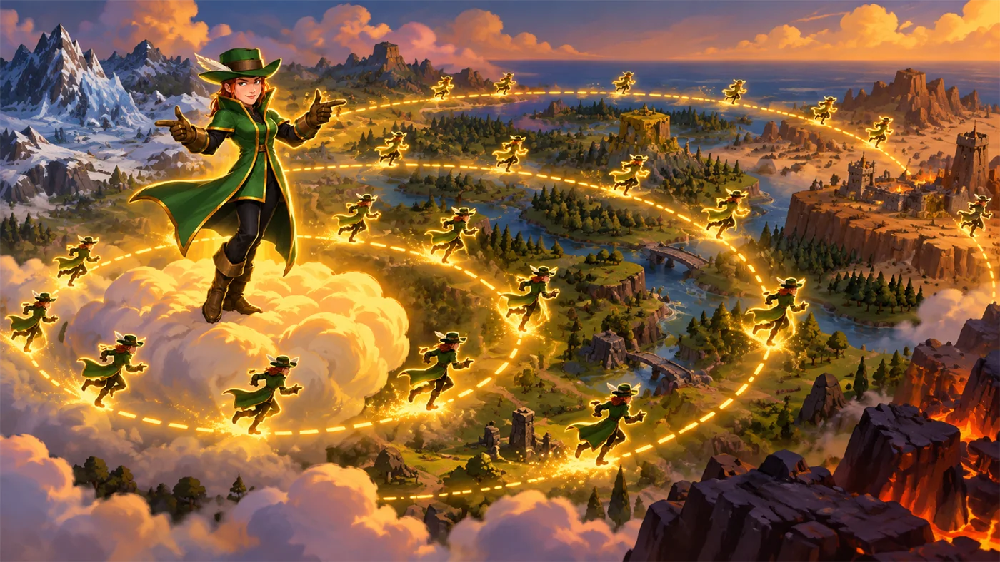
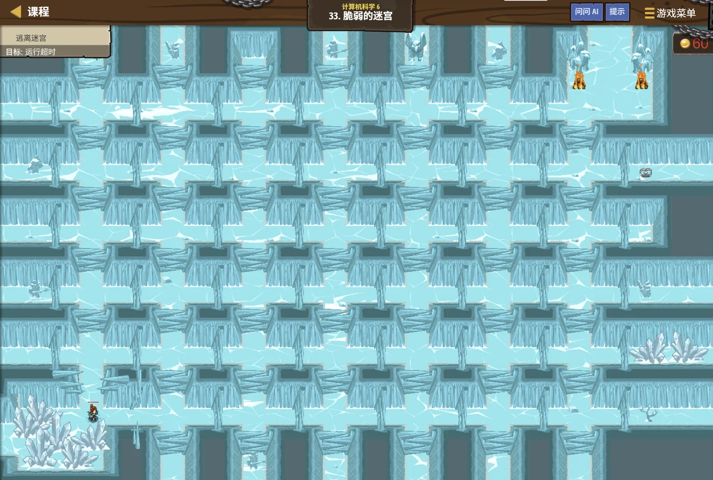

故事：云海迷宫的地面很脆，踩过的格子会塌——所以每个格子只能踩一次。
贺舒曼把镜子铺在迷宫上方：两名侦察兵已经进去了。
一个往深里钻，一个往外扩——你自己看，哪条路更快到中心。
你盯着看了一会儿：向外扩的那个先到了……因为它是一层层逼近的。
对。她收起镜子，找最短的路，就用那个往外扩的。
扣哒考级 · GESP PYTHON 六级 · 第 3 单元 | 云髓天阶 CLOUDMARROW STEPS
双路侦骑 搜索算法：DFS 与 BFS
DFS & BFS

贺舒曼
镜中先知 · 你的向导
云海迷宫的入口处，站着两名侦察兵。
贺舒曼把镜子一分为二，镜面里映出两条截然不同的路线——
左边那位沿窄巷一路直下，走到最底才回头； 右边那位从云台向外一圈圈扩散，探完一圈才探下一圈。
你看着这两条路：……原来把一张地图走遍，可以是两种完全不同的走法。
贺舒曼把镜子一分为二，镜面里映出两条截然不同的路线——
左边那位沿窄巷一路直下，走到最底才回头； 右边那位从云台向外一圈圈扩散，探完一圈才探下一圈。
你看着这两条路：……原来把一张地图走遍，可以是两种完全不同的走法。
贺舒曼 · 镜中先知
上一课我们学会了"遍历一棵树"。这一课把范围放大：如果对象是一张地图、一个迷宫，怎么把它走遍？
答案就是这两种搜索：DFS（深度优先）和 BFS（广度优先）。 它们各有各的脾气，也各有各的用处。
assets/illustrations/py-L6-03-01_two_scouts.webp
【配图位】云海迷宫俯瞰图：两名侦察兵从同一个入口出发——左边一人沿窄巷一路深入、留下一串笔直向下的紫色发光脚印；右边一人从入口平台向外扩散、留下浅蓝色的同心波纹；两条路径最终在迷宫中央的宝箱处交错；一名戴眼镜的先知站在入口高台上举镜观望。
0 单元导语与目标
Unit Overview
0.1 学习目标
1学完这个单元，你将能……
- 说清 DFS 和 BFS 的走法区别
- 用递归和栈两种方式写 DFS
- 用队列写 BFS
- 说出 BFS 为什么能求"最少边数"
- 根据题目选对搜索方式
- 说出两种搜索的复杂度
2对标 GESP 考纲（Python 六级）
- 理解深度优先搜索与广度优先搜索的思想
- 掌握用递归 / 栈实现 DFS
- 掌握用队列实现 BFS
- 理解 BFS 求最短路径（最少边数）的原理
- 考核目标：能判断搜索顺序、能补全压栈/入队语句
0.2 考纲对照
| 本单元小节 | 对应考纲条目 | 真题常考形式 |
|---|---|---|
| 1 两条侦察路线 | 两种搜索的思想 | DFS 与 BFS 的走法区别 |
| 2 DFS | 深度优先搜索 | 递归写法；栈写法里"先压谁"（必考） |
| 3 BFS | 广度优先搜索 | 用队列实现；层序与最短边数（必考） |
| 4 两种搜索的对比 | 适用场景 | 什么题该用哪个 |
| 5 在树上搜索 | 树上的搜索 | 求深度；右视图 |
1 两条侦察路线
Two Ways to Explore
1.1 一个往深里钻，一个往外扩
两种搜索，一句话说清区别：
DFS（深度优先搜索，Depth-First Search）——
沿着一条路一直往下走，走不通了才回头，回到上一个岔口换一条路。
BFS（广度优先搜索，Breadth-First Search）—— 先把"离起点一步能到的地方"全部走完，再走"两步能到的"，一圈圈往外扩。
打个比方：DFS 像一个人走迷宫——一头扎进去，撞墙了才退回来。 BFS 像往水里丢石子——波纹一圈套一圈，均匀地向外扩散。
BFS（广度优先搜索，Breadth-First Search）—— 先把"离起点一步能到的地方"全部走完，再走"两步能到的"，一圈圈往外扩。
打个比方：DFS 像一个人走迷宫——一头扎进去，撞墙了才退回来。 BFS 像往水里丢石子——波纹一圈套一圈，均匀地向外扩散。
同一张地图，两条路线的顺序完全不同
TEXT
地图（起点是 A）：
A
/ \
B C
/ \ \
D E F
【DFS 的顺序】一路走到黑
A → B → D → （D 没有下一步，退回 B）
→ E → （E 没有下一步，退回 B，B 也没了，退回 A）
→ C → F
结果：A B D E C F
【BFS 的顺序】一圈圈往外
第 0 圈：A
第 1 圈：B、C
第 2 圈：D、E、F
结果：A B C D E F
★ 注意两者"访问顺序"的差别：
DFS 把 A 的一整支子树走完了，才回到 A 的第二个孩子；
BFS 则是"同一层的，先一起走完"。
一句话区分
DFS：竖着走（先把一条路走到底）；BFS：横着走（先把一层走完）
1.2 它们要解决什么问题
两种搜索，各自擅长什么：
DFS 适合：
· 问"有没有一条路能到"（连通性判断）；
· 列举所有可能的方案（比如全排列、走迷宫的所有走法等）；
· 和递归结构天然契合的问题（树、图、回溯）。
BFS 适合：
· 问"最少几步能到"——这是 BFS 的看家本领；
· 按层处理的问题（层序遍历、右视图）；
· 在"每一步代价相同"的情况下求最短路径。
最需要记住的一条：求"最少步数 / 最短路径"，用 BFS。
· 问"有没有一条路能到"（连通性判断）；
· 列举所有可能的方案（比如全排列、走迷宫的所有走法等）；
· 和递归结构天然契合的问题（树、图、回溯）。
BFS 适合：
· 问"最少几步能到"——这是 BFS 的看家本领；
· 按层处理的问题（层序遍历、右视图）；
· 在"每一步代价相同"的情况下求最短路径。
最需要记住的一条：求"最少步数 / 最短路径"，用 BFS。
为什么"最少步数"必须用 BFS？
因为 BFS 的扩散顺序是"按距离由近到远"的：
它一定先访问完所有"1 步能到"的、再访问"2 步能到"的……
所以第一次碰到目标时，走的一定是最短的路线—— 那些更短的路线早就被访问过了。
而 DFS 是一个方向猛冲到底—— 它可能用 100 步绕到目标，可明明有 3 步的路。 所以找最短路径不能用 DFS。
所以第一次碰到目标时，走的一定是最短的路线—— 那些更短的路线早就被访问过了。
而 DFS 是一个方向猛冲到底—— 它可能用 100 步绕到目标，可明明有 3 步的路。 所以找最短路径不能用 DFS。
2 DFS：一路走到黑
Depth-First Search
2.1 递归实现
DFS 的递归写法：最自然的形式
Python
def dfs(u):
visited[u] = True # ★ 标记"我来过了"
print(u, end=" ")
for v in adj[u]: # 看看 u 能走到哪些地方
if not visited[v]: # 没去过才去
dfs(v) # ★ 一路往下钻
三行核心
① 标记自己已访问；② 处理自己；③ 对每个没去过的邻居，递归地钻下去
为什么它天然是递归？ 因为"把从 u 出发的整片区域走一遍"这件事，可以拆成"对每个邻居做同样的事"
为什么它天然是递归？ 因为"把从 u 出发的整片区域走一遍"这件事，可以拆成"对每个邻居做同样的事"
visited 数组是 DFS 的命根子。
如果一张图里有环（A 能到 B，B 又能回到 A），没有 visited 会怎样？
dfs(A) 会调用 dfs(B)，dfs(B) 又调用 dfs(A)，dfs(A) 再调用 dfs(B)…… 无限循环，直到栈溢出崩溃。
所以：进入一个结点就立刻标记它，之后再也不进去。
注意树上可以不写 visited——因为树没有环，从父结点下来就不可能再绕回去。 但图必须写。
dfs(A) 会调用 dfs(B)，dfs(B) 又调用 dfs(A)，dfs(A) 再调用 dfs(B)…… 无限循环，直到栈溢出崩溃。
所以：进入一个结点就立刻标记它，之后再也不进去。
注意树上可以不写 visited——因为树没有环，从父结点下来就不可能再绕回去。 但图必须写。
2.2 用栈实现：先压右、后压左
用栈模拟递归——把"系统的栈"搬到手里
Python
def dfs(root):
if root is None:
return
stack = [root]
while stack:
node = stack.pop() # 弹出栈顶
print(node.value, end=" ")
# ★ 希望先访问左子树 → 就要让左孩子先出栈
# 栈是"后进先出" → 所以先压右、后压左
if node.right:
stack.append(node.right)
if node.left:
stack.append(node.left)
横线上该填什么
要"左子树优先"，就得
原因 栈是后进先出——后压进去的会先被取出来
先压右孩子、后压左孩子原因 栈是后进先出——后压进去的会先被取出来
记牢这句口诀：
"想先访问谁，就后压谁。"
想先访问左孩子 → 左孩子要最后压 → 压的顺序是"先右后左"。
想先访问右孩子 → 就"先左后右"。
这句话能解决所有"用栈模拟遍历"的填空题。
想先访问左孩子 → 左孩子要最后压 → 压的顺序是"先右后左"。
想先访问右孩子 → 就"先左后右"。
这句话能解决所有"用栈模拟遍历"的填空题。
递归和栈，其实是同一件事。
递归的时候，"现在走到哪儿了""回来之后该做哪一步"这些信息，
都被系统记在一个叫"调用栈"的地方。
用栈自己写，就是把这个栈搬到明面上： 手动
所以：递归能写的遍历，用栈也一定能写；反过来也一样。 只是"递归"写起来短，"栈"写起来更可控（不怕递归太深）。
用栈自己写，就是把这个栈搬到明面上： 手动
push、手动 pop，一步一步自己安排。所以：递归能写的遍历，用栈也一定能写；反过来也一样。 只是"递归"写起来短，"栈"写起来更可控（不怕递归太深）。
图 2（SVG）：DFS 的压栈顺序——想先访问谁，就后压谁
3 BFS：一圈一圈往外扩
Breadth-First Search
3.1 用队列实现
BFS 的骨架：队列不能少
Python
def bfs(start):
q = [start]
visited[start] = True # ★ 入队时就标记，不要等到出队
while q:
u = q.pop(0) # 从队首取
print(u, end=" ") # 处理这个结点
for v in adj[u]:
if not visited[v]:
visited[v] = True # ★ 立刻标记并入队
q.append(v)
为什么用队列？
队列是"先进先出"——先入队的结点先被处理
于是"先发现的一层"自然就"先被处理完"，一圈圈往外扩就是这么来的
于是"先发现的一层"自然就"先被处理完"，一圈圈往外扩就是这么来的
BFS 里"什么时候标记 visited"，和 DFS 不一样。
DFS 里可以在"进入结点时"标记——因为它是一条路走到底，每层只来一次。
BFS 里必须在"入队时就标记"——如果等到出队才标记，同一个结点可能被好几个邻居重复入队， 队列里塞进一堆重复元素。
虽然最后结果可能还对，但会白白多跑很多次、甚至超时。
记法："BFS 入队即标记"。
BFS 里必须在"入队时就标记"——如果等到出队才标记，同一个结点可能被好几个邻居重复入队， 队列里塞进一堆重复元素。
虽然最后结果可能还对，但会白白多跑很多次、甚至超时。
记法："BFS 入队即标记"。
3.2 层序与"最少边数"
记录"到起点的距离"：BFS 的看家本领
Python
def bfs(start):
q = [start]
dist[start] = 0 # ★ 起点到自己，距离是 0
visited[start] = True
while q:
u = q.pop(0)
for v in adj[u]:
if not visited[v]:
visited[v] = True
dist[v] = dist[u] + 1 # ★ 距离 = 上一个结点的距离 + 1
q.append(v)
关键在一句
dist[v] = dist[u] + 1;
因为 BFS 是"按距离由近到远"访问的——第一次到达 v 时，走的必然是最少边数的那条路
"BFS 第一次到达某个结点时，走的边数一定是最少的。"
为什么？
因为 BFS 是"一层一层"地扩散的：先访问完所有距离 0 的（只有起点），
再访问完所有距离 1 的，再距离 2 的……
所以当 v 第一次被访问到时，它一定是"在距离 k 的那一层被发现的"—— 而所有距离小于 k 的可能位置，早就被访问过了。
结论：第一次到达 v 走的边数，就是最少边数。 这就是 BFS 能求最短路径（每步代价相同时）的根本原因。
所以当 v 第一次被访问到时，它一定是"在距离 k 的那一层被发现的"—— 而所有距离小于 k 的可能位置，早就被访问过了。
结论：第一次到达 v 走的边数，就是最少边数。 这就是 BFS 能求最短路径（每步代价相同时）的根本原因。
图 3（SVG）：BFS 的同心扩散——按距离由近到远
assets/illustrations/py-L6-03-03_bfs_rings.webp
【配图位】云海上一座圆形平台的俯视图，一名侦察兵站在正中；从他脚下向外扩散出一圈圈发光的同心波纹，每一圈上均匀分布着若干侦察兵的身影（表示同一层同时探索）；内圈的身影明亮、外圈略暗，暗示"探完一圈才探下一圈"；一名戴眼镜的先知站在平台边缘俯视这片波纹。
4 两种搜索的对比
Comparing
4.1 各自适合什么
| 问题 | 该用哪个 | 原因 |
|---|---|---|
| 从起点能不能走到终点？ | 都行 | 只要能走遍就行，看哪个好写 |
| 最少要走几步？ | BFS | 只有 BFS 是按距离由近到远访问的 |
| 列举所有可能的走法 | DFS | 一条路走到底，天然适合"枚举方案" |
| 按层输出（层序、右视图） | BFS | 它本来就是一层层处理的 |
| 求连通块 / 判断几片区域 | 都行 | 两者都能把一片区域走遍 |
| 数据规模很大、怕递归太深 | BFS 或 手写栈的 DFS | 递归层数太深会栈溢出 |
| 需要"回溯"（走错了要退回来换路） | DFS | 它天然就有"退回来"这个动作 |
4.2 复杂度与空间
复杂度：两者是一样的。
设图的点数是
时间复杂度：都是
空间复杂度：都是
额外的空间用在哪里，两者不同：
DFS——用递归栈，最大深度等于"最长路径上的点数"；
BFS——用队列，最多同时存"一整层"的点。
所以在"很宽很浅"的图上，BFS 的队列可能很大； 在"很窄很深"的图上，DFS 的递归可能很深。
V、边数是 E：时间复杂度：都是
O(V + E)——
因为每个点最多被访问一次、每条边最多被看两次（两个端点各看一次）。空间复杂度：都是
O(V)——
visited 数组要 V 个位置。额外的空间用在哪里，两者不同：
DFS——用递归栈，最大深度等于"最长路径上的点数"；
BFS——用队列，最多同时存"一整层"的点。
所以在"很宽很浅"的图上，BFS 的队列可能很大； 在"很窄很深"的图上，DFS 的递归可能很深。
再强调一遍最常考的那句话：
"在每一步代价都相同的情况下，BFS 第一次到达目标结点时，走的边数一定是最少的。"
这句话是 BFS 求最短路的理论基础，也是判断题的常客。
而对应地： "DFS 第一次到达目标结点时，走的边数一定是最少的"——这句话是错的。
因为 DFS 是一头猛冲，它可能绕了很远才碰到目标。
这句话是 BFS 求最短路的理论基础，也是判断题的常客。
而对应地： "DFS 第一次到达目标结点时，走的边数一定是最少的"——这句话是错的。
因为 DFS 是一头猛冲，它可能绕了很远才碰到目标。
5 在树上搜索
Searching Trees
5.1 树的 DFS 与 BFS
树是搜索最常用的舞台
Python
# 树上的 DFS：就是上一课的"三种遍历"之一
def dfs(root):
if root is None:
return
print(root.val, end=" ") # 前序
dfs(root.left)
dfs(root.right)
# 树上的 BFS：就是"层序遍历"
def bfs(root):
if root is None:
return
q = [root]
while q:
node = q.pop(0)
print(node.val, end=" ")
if node.left:
q.append(node.left) # 左孩子先入队
if node.right:
q.append(node.right) # 右孩子后入队
★ 对比一下压栈和入队的顺序：
DFS 用栈 → 先压右、后压左（因为要"后进先出"）
BFS 用队列 → 先入左、后入右（因为要"先进先出"）
同样的"左优先"，在两个结构里写法正好相反！
核心对照
DFS 用栈（后进先出），所以要"反着压"；
BFS 用队列（先进先出），所以要"顺着放"
BFS 用队列（先进先出），所以要"顺着放"
5.2 求深度与右视图
BFS 按层处理：求右视图
Python
# 右视图：每一层最右边那个结点
def rightView(root):
if root is None:
return
q = [root]
while q:
sz = len(q) # ★ 先记下"这一层有几个"
for i in range(sz):
node = q.pop(0)
if i == sz - 1: # ★ 这一层的最后一个
print(node.val, end=" ")
if node.left:
q.append(node.left)
if node.right:
q.append(node.right)
关键技巧
循环开始前先
然后只循环
sz = q.size()，把"这一层有几个"记下来然后只循环
sz 次——这样就把"一层"和"下一层"干净地分开了
"按层处理"是 BFS 最常用的技巧。
固定套路：
① 进入 while 循环，先
② 然后
③ 循环体里把下一层的结点入队。
这样每一轮 while 刚好处理"一整层"—— 层序输出、求每层最大值、求右视图、求树的宽度，全都能用这个套路。
注意：
sz = q.size()；② 然后
for (i = 0; i < sz; i++) 只处理这一层的结点；③ 循环体里把下一层的结点入队。
这样每一轮 while 刚好处理"一整层"—— 层序输出、求每层最大值、求右视图、求树的宽度，全都能用这个套路。
注意：
sz 必须在循环前存下来。
如果直接用 q.size() 当条件，
循环里入队的元素会让 size 不断变大，就分不清层了。
6 代码实战
Level Practice
关卡
脆弱的迷宫
进入关卡 →思路：用 BFS 从起点开始一层层扩散，


assets/stages/py-L6-03-stage1_fragile_maze.webp
【截图位】脆弱的迷宫关卡：云海迷宫格子与探索路径同框，代码编辑区可见队列与 BFS 循环。
BFS 求最少步数：完整实现
Python
# 输入：第一行 n m s t（n 个点、m 条边、起点 s、终点 t），接下来 m 行每行一条边
n, m, s, t = map(int, input().split())
adj = [[] for _ in range(n + 1)]
visited = [False] * (n + 1)
dist = [0] * (n + 1)
for _ in range(m):
u, v = map(int, input().split())
adj[u].append(v) # 无向图：两边都要连
adj[v].append(u)
q = [s]
visited[s] = True
dist[s] = 0
while q:
u = q.pop(0)
for v in adj[u]:
if not visited[v]:
visited[v] = True # ★ 入队时就标记
dist[v] = dist[u] + 1 # ★ 距离加一
q.append(v)
if visited[t]:
print(dist[t]) # 最短要几步
else:
print(-1) # 走不到
输入 6 6 1 6 / 1 2 / 1 3 / 2 4 / 3 4 / 4 5 / 5 6
输出 4——最短路线 1 → 3 → 4 → 5 → 6，一共 4 步
输出 4——最短路线 1 → 3 → 4 → 5 → 6，一共 4 步
和本单元的关系：
这段代码是"BFS 求最短路径"的标准模板，值得记下来。
三个要点：
① 用邻接表
② 无向图要连两次（
③
还学到一个常见收尾： 如果终点根本没被访问到，说明"走不通"，按题目要求输出 −1。
去扣哒世界闯这一关 →
三个要点：
① 用邻接表
vector<int> adj[] 存图——
每个点存一个"能通向谁"的列表；② 无向图要连两次（
adj[u].push_back(v) 和
adj[v].push_back(u)），有向图只连一次；③
visited 在入队时就标记、
dist[v] = dist[u] + 1——这两句是 BFS 的灵魂。还学到一个常见收尾： 如果终点根本没被访问到，说明"走不通"，按题目要求输出 −1。
assets/illustrations/py-L6-03-02_dfs_stack.webp
【配图位】云峡的剖面图：一条狭窄的通道笔直向下延伸到峡底，一名翠羽女射手侦察兵正沿通道一路深入，身后留下一道笔直向下的紫色发光轨迹；到了峡底之后轨迹折返、向上爬回，途中在岔口处转向另一条支巷（留下第二条折返的痕迹）；一名戴眼镜的先知站在峡口俯视，冷蓝色光线打在岩壁上。
7 常见陷阱
Common Pitfalls

扣哒鸭 · 调试官
搜索的坑全是"顺序"和"标记"上的。四条，前两条真题都考过。
1
用栈做 DFS 时，把"先压谁"搞反了。

扣哒鸭：栈是后进先出——
后压进去的会先被取出来。
所以要"想先访问谁，就后压谁"。
想先访问左子树 →
所以要"想先访问谁，就后压谁"。
想先访问左子树 →
先 push 右、后 push 左。反了就成了右子树优先。口诀：想先访问谁，就后压谁
2
以为"DFS 也能求最短路径"。

扣哒鸭：只有 BFS 第一次到达时走的边数最少。
DFS 是一头猛冲的——它可能绕了很远才碰到目标，明明旁边有近路。
所以求"最少几步"的题，一律用 BFS。
所以求"最少几步"的题，一律用 BFS。
记牢：求最短（每步代价相同）→ BFS
3
BFS 里等到出队才标记 visited。

扣哒鸭：必须在"入队时就标记"。
如果等到出队才标记，同一个结点会被好几个邻居重复入队—— 队列里塞满重复元素，白白多跑很多次，甚至超时。
如果等到出队才标记，同一个结点会被好几个邻居重复入队—— 队列里塞满重复元素，白白多跑很多次，甚至超时。
正确做法：BFS 入队即标记
4
用栈 / 队列时忘了判空。

扣哒鸭：往栈里压结点之前，
先看看这个孩子是不是空（
把空指针压进去，后面取出时一取成员就崩溃了。
递归版之所以不用判，是因为开头那行
if (node->left)）。把空指针压进去，后面取出时一取成员就崩溃了。
递归版之所以不用判，是因为开头那行
if (root == nullptr) return; 已经挡住了。正确做法：
if (node->left) s.push(node->left);8 题目练习
Practice
第 1 题改编自 2026 年 9 月 · Python 六级 第 9 题，其余为原创练习题。
改编自 2026 年 9 月 · Python 六级 · 第 9 题单选题
下面的代码用栈实现二叉树的深度优先搜索（迭代版前序遍历），横线处应当填写（ ）。
1 class TreeNode: 2 def __init__(self, val): 3 self.value = val 4 self.left = None 5 self.right = None 6 7 def dfs(root): 8 if root is None: 9 return 10 s = [] 11 s.append(root) 12 while len(s) > 0: 13 node = s.pop() 14 print(node.value, end=" ") 15 # --------此处填空--------
A.先 append(node.right)、再 append(node.left)
B.先 append(node.left)、再 append(node.right)
C.先 append(node.right)、再 append(node.left)，且各自加 None 判断
D.先 append(node.left)、再 append(node.right)，且各自加 None 判断
B.先 append(node.left)、再 append(node.right)
C.先 append(node.right)、再 append(node.left)，且各自加 None 判断
D.先 append(node.left)、再 append(node.right)，且各自加 None 判断
查看答案与详解
答案：C。栈是后进先出的，所以"想先访问谁，就要后把它压进去"。
前序遍历要求顺序是 根 → 左 → 右，那么出栈顺序必须先是左、再是右 —— 于是压栈时要先压右孩子、再压左孩子。
为什么还要加 None 判断？叶子结点的
A、B 错：少了空判断，遇到叶子就崩；
D 错：压栈顺序反了，输出会变成"根 → 右 → 左"。
一句话记：递归版前序是"根、左、右"，迭代版用栈时 —— 压栈反着来。
对应小节1 深度优先 DFS。
前序遍历要求顺序是 根 → 左 → 右，那么出栈顺序必须先是左、再是右 —— 于是压栈时要先压右孩子、再压左孩子。
为什么还要加 None 判断？叶子结点的
left／right 是 None，不加判断就会把 None 也压进栈，下一轮 node.value 直接报错。所以 C 才完整。A、B 错：少了空判断，遇到叶子就崩；
D 错：压栈顺序反了，输出会变成"根 → 右 → 左"。
一句话记：递归版前序是"根、左、右"，迭代版用栈时 —— 压栈反着来。
对应小节1 深度优先 DFS。
原创练习题单选题
深度优先搜索（DFS）通常借助哪种数据结构实现？（ ）
A.队列 B.栈（或递归） C.树 D.字典
查看答案与详解
答案：B。DFS 是"一路走到黑再回头"，
需要后进先出——正好是栈的特性；递归本身就利用了系统的调用栈。
对比：BFS 用队列（先进先出），才能实现层层扩散。
对应小节2 DFS：一路走到黑；4 两种搜索的对比。
对比：BFS 用队列（先进先出），才能实现层层扩散。
对应小节2 DFS：一路走到黑；4 两种搜索的对比。
原创练习题单选题
在一个无权（每步代价相同）的图上，要找从 A 到 B 的最少步数，
应该用（ ）。
A.DFS B.BFS C.两种都行 D.两种都不行
查看答案与详解
答案：B。BFS 按"一层一层"的顺序访问，
第一次遇见目标时，走过的层数一定是最少的。
DFS 则可能一头扎进很深的岔路，找到的路径可能绕远。
这是搜索算法里最重要的一条结论。
对应小节4 两种搜索的对比。
DFS 则可能一头扎进很深的岔路，找到的路径可能绕远。
这是搜索算法里最重要的一条结论。
对应小节4 两种搜索的对比。
原创练习题判断题
搜索时如果不对访问过的节点做标记，在含有环的图中可能会导致程序无法结束。（ ）
查看答案与详解
答案：正确（√）。有环的话，程序会在环里来回打转，永远不会停。
做法：用一个集合
对应小节6 常见陷阱。
做法：用一个集合
visited 记录到过的点，
每次进入前先判断"是否已经来过"。对应小节6 常见陷阱。
原创练习题单选题
下面关于 BFS 中"标记时机"的说法，正确的是（ ）。
A.应该在节点出队时标记
B.应该在节点入队时标记
C.不需要标记
D.应该在访问完它的所有邻居后再标记
B.应该在节点入队时标记
C.不需要标记
D.应该在访问完它的所有邻居后再标记
查看答案与详解
答案：B。要在入队的同时就标记为"已访问"。
如果等出队才标记，同一个节点可能被多个邻居重复加入队列， 导致队列里出现大量重复项。
对应小节3 BFS：一圈一圈往外扩；6 常见陷阱。
如果等出队才标记，同一个节点可能被多个邻居重复加入队列， 导致队列里出现大量重复项。
对应小节3 BFS：一圈一圈往外扩；6 常见陷阱。
原创练习题单选题
用 BFS 遍历下图：起点为 1，1 的邻居是 2、3，2 的邻居是 4，3 的邻居是 5。
访问顺序是（ ）。
A.1 2 4 3 5 B.1 2 3 4 5 C.1 3 5 2 4 D.4 2 1 3 5
查看答案与详解
答案：B。BFS 按层访问：
第 1 层：1；第 2 层：2、3；第 3 层：4、5。
所以是 1 2 3 4 5。
对比：A 项
对应小节1 两条侦察路线。
第 1 层：1；第 2 层：2、3；第 3 层：4、5。
所以是 1 2 3 4 5。
对比：A 项
1 2 4 3 5 是 DFS 的顺序（先深入 2 的子树）。对应小节1 两条侦察路线。
原创练习题判断题
在无权图中，DFS 也能保证找到从起点到终点的最短路径。（ ）
查看答案与详解
答案：错误（×）。DFS 只保证"能找到一条路"，
但那条路可能是绕远的。
要最短路径必须用 BFS。这是搜索部分最爱考的判断点之一。
对应小节4 两种搜索的对比。
要最短路径必须用 BFS。这是搜索部分最爱考的判断点之一。
对应小节4 两种搜索的对比。
原创练习题编程题
题目要求：用一个字典表示无向图，用 BFS 求从起点到终点的最短步数。
查看参考答案与要点
from collections import deque
graph = {
"A": ["B", "C"],
"B": ["A", "D"],
"C": ["A", "D", "E"],
"D": ["B", "C", "F"],
"E": ["C", "F"],
"F": ["D", "E"]
}
def bfsSteps(start, target):
visited = set([start])
queue = deque([[start, 0]]) # 队列里存 [节点, 已走步数]
while queue:
node, step = queue.popleft()
if node == target: # 第一次碰到就是最短
return step
for nxt in graph[node]:
if nxt not in visited:
visited.add(nxt) # 入队时就标记
queue.append([nxt, step + 1])
return -1
print(bfsSteps("A", "F")) # 3
输出：3（A → C → E → F）
要点：
① 队列里同时存"节点"和"步数"，用列表打包；
② 出队时立即判断是否命中目标——第一次命中一定最短；
③ 入队时就要标记 visited，避免重复入队；
④ 遍历不到时返回 -1 表示"走不通"。
对应小节3 BFS：一圈一圈往外扩。
9 本单元小结
Unit Summary
贺舒曼 · 镜中先知
三句话记住搜索：一、DFS 一条路走到黑，用栈或递归。
二、BFS 一圈一圈往外扩，用队列。
三、问"能不能到"用 DFS，问"最少几步"用 BFS。
还有一个通用要求：无论哪种搜索，都要记得做访问标记。
你在云海迷宫中收获了什么
- DFS（深度优先）——一条路走到黑，走不通再回头；用栈或递归实现。
- BFS（广度优先）——一圈走完再走外面一圈；用队列实现。
- 访问标记——用 visited 记录到过的点，防止在环里死循环。
- 标记时机——BFS 要入队时就标记。
- 最短路径——无权图上必须用 BFS，第一次命中即最短。
- 内存差异——DFS 省内存，BFS 需要存一整层。
- 选型口诀——问"能不能"，用 DFS；问"多少步"，用 BFS。